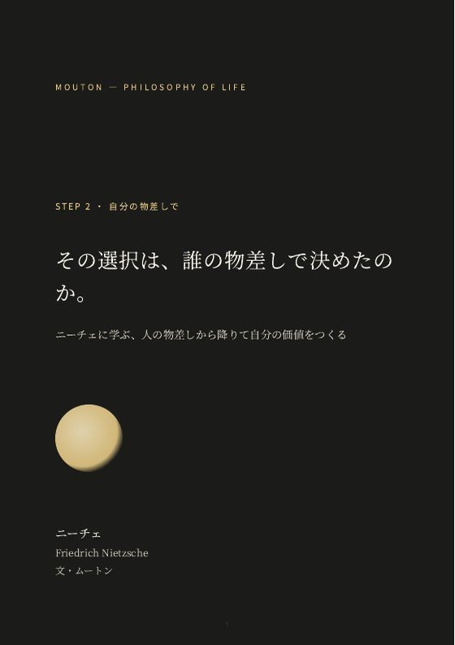
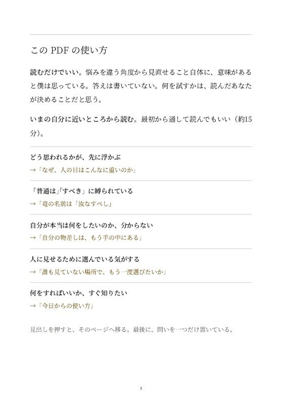
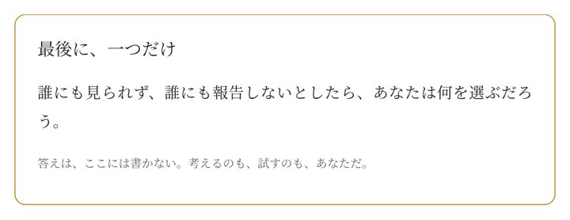

本当は、どう思われるかが怖い。
人の物差しではなく、自分の物差しで選ぶ。
「気にするな」と言い聞かせず、人の意見も切り捨てずに。ニーチェの「人の物差しから降りる」考え方を、15分で読める記事と5つの書き込みワークにした。
- 頭の中の「すべき」が、誰の声なのかが分かる
- 人の意見を「情報」として聞き、選ぶときは自分の物差しを使える
- これまで本当に愛してきたものから、自分の物差しの目盛りが見える
記事：「その選択は、誰の物差しで決めたのか。」ニーチェに学ぶ、人の物差しから降りて自分の価値をつくる（PDF・全文 約15分）
01 / Worries
こんな状態が、続いていないか。
- 書き終えた投稿を、送信の手前で消してしまう
- 気になる求人を見つけても、先に浮かぶのは親や周りの顔
- 会議で言いかけた意見を、上司の表情を見て飲みこむ
- 自分の人生なのに、自分で決めた気がしない
人の目や評価が気になる。「どう思われるか」で決めてしまう。
02 / What you can do
この記事で取り組めること
いま
何を選ぶにも先に「どう思われるか」を考えてしまって、自分で決めた気がしない。
読んで、書き込んだあと
人の意見は聞くけれど、最後は自分の物差しで選べるし、選んだことを誰に見せなくても続けられる。
読むだけでも、悩みの見え方が変わる。
気にしているのは、人の「目」そのものではなく、自分の声のふりをした誰かの「物差し」かもしれない。
有料にしているのは、情報の量ではなく、使いやすさのため。
- 自分の悩みに当てはめやすい。転職・SNS・職場の会議など、よくある場面の例に、自分のことを重ねて読める。
- 必要な答えにたどり着ける。最初のページに「いまの状態 → 読むところ」の地図。全部を読まなくても、近いところから読める。
- 次の行動まで分かる。最後に、今日できるいちばん小さな一歩と、やめることを一つ。
地図の中身を見る
- どう思われるかが、先に浮かぶ→「なぜ、人の目はこんなに重いのか」
- 「普通は」「すべき」に縛られている→「竜の名前は「汝なすべし」」
- 自分が本当は何をしたいのか、分からない→「自分の物差しは、もう手の中にある」
- 人に見せるために選んでいる気がする→「誰も見ていない場所で、もう一度選びたいか」
- 何をすればいいか、すぐ知りたい→「今日からの使い方」
扱うのは、ひとつの選択だけ。決めて、動くところまで。
対象：人の目が気になって、決めきれずにいる、ひとつの選択
書き込むなら（任意・約10分）
- その選択で、誰にどう思われるのが怖いのかを書く
- 頭の中の「すべき」が、誰の声なのかを書く
- これまで本当に愛してきたもので、自分の物差しを書く
- 今週、誰にも見せずに、一つだけやってみる
やめること人の物差しに合格するために選ぶこと。今週の一歩は、誰にも見せずにやる
思想の全体像や、人生全体の自己分析は扱わない（それは本のほうが向いている）。変化を約束するものでもない。考える材料と、試す方法を渡すための記事だ。
03 / Sample
実物の見本
販売する記事（PDF）の冒頭を、そのまま載せている。
書き終えた投稿を、送信の手前で消す。
気になる求人を見つけた夜、最初に浮かんだのは仕事の中身ではなく、親の顔だった。
会議で言いかけた意見を、上司の表情を見て飲みこむ。何かを選ぶとき、頭のどこかで先に「どう思われるか」を計算している。
ひとつずつは、小さなことだ。誰かに迷惑をかけているわけでもない。でも、それが積み重なると、ある日ふと気づく。自分の人生なのに、自分で決めた気がしない。
気になっているのは「目」ではなく「物差し」
SNSの反応。親の期待。上司の評価。「普通はこうする」という空気。
声の主はばらばらなのに、共通していることがある。どれも、自分の外にある物差しで、自分の選択を測っているということだ。
人の目を気にすること自体は、悪いことではないと僕は思う。人と一緒に生きている以上、まわりの反応が気になるのは自然なことだ。
困るのは、それが唯一の物差しになったときだ。そうなると、選ぶ前から答えが決まってしまう。いちばん減点されにくいものを選ぶ。やりたいかどうかは、二の次になる。
しかも、外の物差しは一本ではない。親は「安定」で測り、SNSは「目立つ成功」で測り、職場は「周りと揃っているか」で測る。目盛りがそれぞれ違うから、全部に合格する選択はどこにもない。だから決められない。決めたあとも、誰かの反応が変わるたびに落ち着かなくなる。
この悩みに、自分の人生ごと向き合った哲学者がいる。フリードリヒ・ニーチェだ。
期待どおりの道を、途中で外れた人
ニーチェは1844年、ドイツの牧師の家に生まれた。父は彼が4歳のときに亡くなっている。
20歳でボン大学に入り、神学と古典文献学を学びはじめる。父と同じ、牧師になる道だ。ところが1学期で神学をやめてしまう。母の望みに反する決断だった。
その後は古典文献学で頭角をあらわし、24歳でスイスのバーゼル大学の教授になる。博士号もまだ持っていなかった。周りの期待に、これ以上ないかたちで応えた人生に見える。
流れが変わったのは、1872年に出した最初の本『悲劇の誕生』からだ。学界から返ってきたのは、冷たい沈黙と、20代の若い研究者ヴィラモーヴィッツによる激しい批判のパンフレットだった。
1879年、ひどい頭痛と目の病気のために、彼は大学を辞める。それからは少ない年金で暮らし、夏はスイスのシルス・マリア、冬はジェノヴァやニースなどの町で過ごしながら書きつづけた。本はほとんど売れなかった。『ツァラトゥストラはこう語った』の第4部は、ごくわずかな部数を刷って、親しい友人に配っただけだった。
では、彼は人の目など平気な人だったのか。僕は、そうではなかったと思う。晩年に書いた『この人を見よ』の序言に、こんな一文がある。
聞いてくれ。私はこういう者だ。何よりも、私を取り違えないでくれ。 ——『この人を見よ』序言第1節（僕の訳）
理解されたかった人なのだ。人の目を気にしない超人ではなく、評価のど真ん中から評価の外へ出て、それでも「何を基準に生きるか」を自分で決めなければならなかった、一人の人間だった。
人は、慣習と意見の陰に隠れる
大学を辞める5年前、まだ教授だった1874年に、ニーチェは『反時代的考察』の第3篇「教育者としてのショーペンハウアー」を書いた。その書き出しは、こうだ。
多くの国と民族を見てきた旅人が、「人間にどこでも共通している性質は何か」と聞かれて、「怠けぐせがある」と答えた。いや、もっと正確には「みんな臆病で、慣習と世間の意見の陰に隠れている」と言うべきだった、と考える人もいるだろう（第1節、要約）。
では、何が人に隣人を恐れさせ、群れのように考えて動かせるのか。ニーチェの答えは、たいていの場合、楽をしたいという気持ち、つまり旅人の言った怠けぐせだ、というものだった。人は臆病である以上に怠惰で、まっすぐ正直に生きることがもたらす面倒を、何より恐れている（第1節、要約）。
ここに、僕はこの悩みの意外な正体を見る。他人の物差しは、楽なのだ。 自分で考えなくていい。うまくいかなくても「みんなそうしていた」と言える。人の目が気になるのは、弱いからだけではない。借りた物差しのほうが、手間がかからないからでもある。
そしてニーチェは、こう続ける。
その他大勢の一人でいたくない人は、自分に甘くするのをやめればいい。良心に従えばいい。良心はこう呼びかけている。「君自身であれ。君がいましていること、考えていること、欲しがっていることは、どれも君自身ではない」 ——「教育者としてのショーペンハウアー」第1節（僕の訳）
言葉は強い。でも、ここで立ち止まってしまう人も多いと思う。「君自身であれ」と言われても、その「自分」が分からないから困っているのだ。 人の目を外したら、何も残らない気がする。
では、どうすればいいのか。
— ここから先は有料 —
書き込みワークの見本（5つのうち2つ）
- ＿＿＿＿を決められないのは、＿＿＿＿にどう思われるかが怖いからだ。
- これまで本当に愛してきたものを三つ並べると、＿＿＿、＿＿＿、＿＿＿。
PDF の中身（実物の一部）






04 / Contents
内容と使い方
- 竜の名前は「汝なすべし」
- なぜ、人の目はこんなに重いのか
- 自分の物差しは、もう手の中にある
- 誰も見ていない場所で、もう一度選びたいか
- 今日からの使い方
- 書き込みワーク
- おわりに
- 形式
- PDF（スマホ・パソコンで読める。印刷して書き込める）
- 受け取り
- お支払いのあと、入力したメールアドレスにダウンロード用のリンクが届く（有効期限7日・最大5回）
- 分量
- 全文 約15分。冒頭はこのページで無料で読める
- ワーク
- 空欄に書き込む5つのワーク（任意・約10分）
- 地図
- 最初のページに「いまの状態 → 読むところ」
- 出典
- 引用には書名と節・章を明記。研究は著者・年・誌名つき
- 地図から読む。最初のページで、いまの自分に近いところを選ぶ。最初から通して読んでもいい。
- 気になったら、書き込む。任意。紙かスマホのメモに、ワークの空欄を埋める。正解はない。
- 1週間後に読み返す。見え方や、踏んだ一歩がどう変わったかを確かめる。
05 / Why Mouton
ムートンが、これを作る理由
MOUTONは、哲学を知識で終わらせず、自分の人生に落とし込むためのブランドだ。人を外側から飾るのではなく、内側から自分自身をつくっていく。
やり方を教えてくれるものは、たくさんある。けれど、状況が変わると、やり方はすぐに使えなくなる。転職か、残るか。人にどう思われても、やるか。岐路で必要なのは、新しいやり方より、「自分は何を基準に選ぶのか」だと僕は思う。だから、哲学者の考えを悩みに合わせて「使える形」にし、書き込みながら試せるようにした。
ほかの方法と、何が違うのか
ほかの方法を否定するためではない。どれも役に立つ場面がある。ただ、悩みの根にある「自分の基準」には届きにくい、というのが僕の考えだ。
正しい生き方を押しつけるつもりはない。渡したいのは答えではなく、自分で考えるための問いと、試すための方法だ。原典にあたり、言えないことは言い切らない。それが、僕がこの記事でいちばん守っていることだ。
06 / Who it's for
向いている人・向いていない人
向いている人
- 「どう思われるか」が先に浮かんで、選択がいつも無難になる人
- 人の意見は大事にしたいけれど、振り回されたくない人
- 反抗するのではなく、静かに自分の基準を持ちたい人
向いていない人
- 「人の目なんて気にするな」と言い切ってほしい人
- ニーチェの思想を、学術的に体系立てて学びたい人
- いじめやハラスメントなど、身の安全に関わる状況にいる人（まず周りの人や相談窓口を頼ってほしい）
07 / Price
価格と購入
ニーチェ — その選択は、誰の物差しで決めたのか。
¥2,980 税込
PDF・全文 約15分・書き込みワーク5つ
このサイトでの販売準備中買う前に、このページの冒頭（無料）で、文章が自分に合うかを確かめられます。お支払いは Stripe の決済画面で行い、お支払いのあと、入力したメールアドレスに PDF のダウンロード用リンクが届きます（有効期限7日・最大5回。期限内に保存してください）。現在は、購入・予約は受け付けていません。
08 / FAQ
よくある質問
人の意見を無視するようになりませんか？
ならない。人の声は「情報」として受け取り、選ぶときの「物差し」は自分のものを使う、という分け方を扱っている。人の意見を前より素直に聞けるようになる、というのが僕の実感だ。
「超人」などの難しい話は出てきますか？
ほとんど出てこない。使うのは「三つの変化」（駱駝・獅子・子ども）、「君自身であれ」、永劫回帰の問いなど、悩みに直接使えるものだけに絞っている。
哲学の本やビジネス書と、何が違いますか？
本は、哲学者の考えを広く深く学ぶのに向いている。この記事は範囲を絞っている。いま抱えているひとつの選択について、決めて、最初の一歩を踏むところまで。一般的なビジネス書より少し高い値段にしているのは、知識を増やすことより、その一歩までを書き込みワークで支えるものだからだ。
無料の記事とは、何が違いますか？
無料の記事は、悩みの見え方を変える一つの視点まで。有料の記事には、場面の例と、読むところの地図と、次の一歩がある。違いは情報の量ではなく、使いやすさだ。考え方が自分に合うかは、無料の入門記事で先に確かめられる。
書き込むのは苦手です。読むだけでも意味がありますか？
ある。悩みを違う角度から捉え直せること自体に、価値があると僕は思っている。書き込みワークは任意で、もっと自分に当てはめたいときに使えばいい。
3本とも読む必要がありますか？
ない。いまの悩みにいちばん近い1本からでいい。3人の哲学者の比較から選べる。
ムートンの考えを信じないと、使えませんか？
信じなくていい。書き込みワークは、自分で確かめるための道具だ。読んで合わなかった考えは、使わなくていい。
買ったあと、ほかの商品や会員制の集まりに誘われますか？
誘わない。購入のときのメールアドレスは、PDF を届けることと、問い合わせへの返事にだけ使う。会員制のサロンや定期購読はない。
購入後の返品・返金はできますか？
購入前に、このページの冒頭（無料）で文章が合うかを確かめてほしい。返品・返金の条件は、販売を始めるときに「特定商取引法に基づく表記」に載せる。
購入したのに、メールが届きません。
まず、迷惑メールのフォルダを確かめてほしい。それでも届かないときは、お問い合わせから、購入した日と記事の名前を知らせてほしい（カード番号などは書かないでほしい）。
心の不調の治療の代わりになりますか？
ならない。眠れない、食べられない、気分の落ち込みが長く続くなど、生活に支障があるときは、まず医師や専門の相談窓口を頼ってほしい。
Three in one path
3本は、一本の道でつながっている。
決められない。人の目が気になる。続かない。別々の悩みに見えて、僕には一本の道に見える。選ぼうとすると、誰の物差しで選ぶのかが問われる。選んだあとには、続けられるかが問われる。
- 1
-
2
自分の物差しで — ニーチェ
その選択を、人の物差しではなく、自分の物差しで。
「その選択は、誰の物差しで決めたのか。」この記事
- 3
どこからでも読める。順番どおりでなくていいし、3本そろえる必要もない。いまいちばん近い悩みの1本からでいい。
もう1問 ○×クイズ